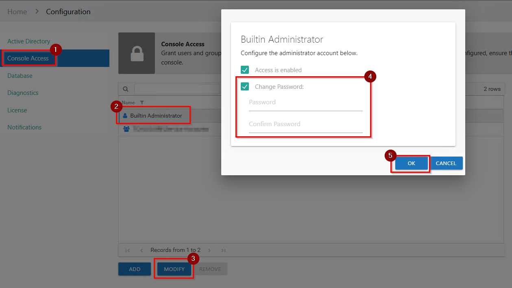
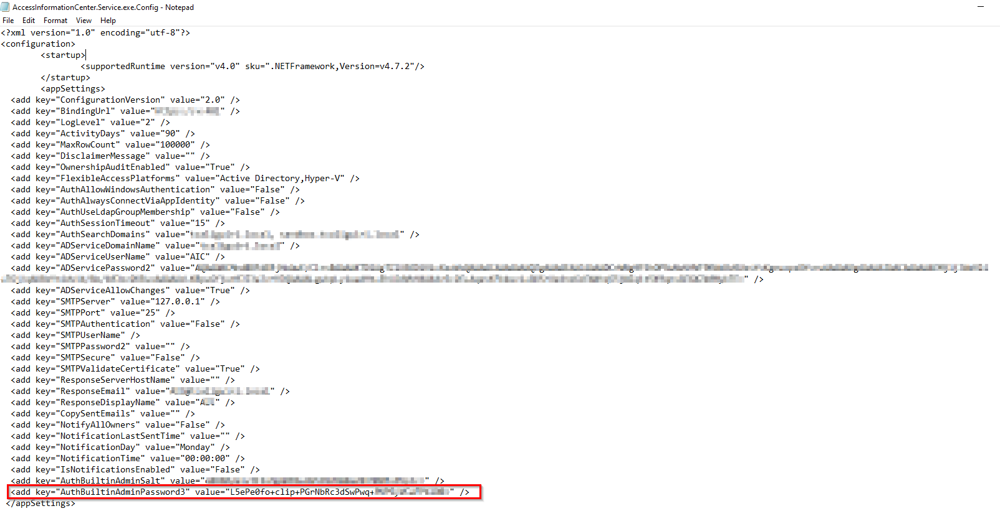

IMPORTANT: This is a work-in-progress article. The product R&D team has yet to review some or all of the information below.
Question
How can you reset the password for the Access Information Center (AIC) Built-In Administrator account?
Answer
With Access to Another Admin in AIC
If you have access to another Admin within the AIC, then follow the steps below to reset the Built-In Admin password:
-
Log in to the AIC.
-
Navigate to Configure Console.
-
Modify the Built-In Admin, as shown below:

Without Access to Another Admin in AIC
If you do not have access to another AIC Admin account, then perform the following steps to reset the password using the AIC Configuration file:
NOTE: The default AIC Configuration file path is
\Program Files\STEALTHbits\Access Information Center\AccessInformationCenter.Service.exe.Config.
-
Open the file as an administrator and remove the hash between " " for the AuthBuiltinAdminPassword3 key:
 -
Restart the Netwrix AIC service in
Services.msc. -
Open the AIC and log in using the default AIC Built-in Admin credentials:
- Username:
Admin - Password:
sb
- Username:
-
You will then be prompted to enter a new password for the AIC Built-in Admin.
NOTE: Prior to v11.6, a password reset will not be prompted. It is recommended that you change the password or disable this account.